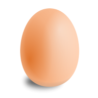
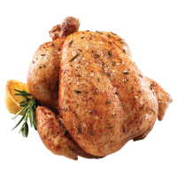
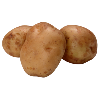
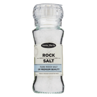
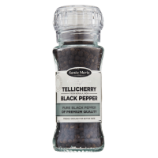
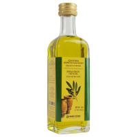

Ana Yemek
Köz Patlıcanlı Tavuk Sote
40 dk Orta
4.8 89B
Ana sayfa, tarif listesi, tarif detay, sağlık, hesap ve pişirme modu tek uygulamada bağlı. Sekmeler, itilen ekranlar, alttan açılan modaller ve geri navigasyonu çalışıyor.
Evdeki malzemeyi yaz, sana ne pişirebileceğini söyleyelim.
Yöresel lezzetlerden dünya mutfağına.
En çok denenen, puanlanan ve kaydedilenler.
Malzemelerini seç, sana uygun tarifleri saniyeler içinde bulalım.

Yumurta
Tavuk
Patates +60 malzemeÜcretsiz hesaplayıcılarla başla.
Sana özel beslenme planı, randevu takibi ve birebir takip. Online görüş, evden çıkma.
Adım adım video tariflerle mutfakta yalnız kalma.
Öğünlerini hafta görünümünde kur; alışveriş listen menünden tek dokunuşla çıksın.
Tariflerini paylaş, denendikçe puan topla, mutfak defterini herkesle buluştur.
Sana özel beslenme planı, randevu takibi ve birebir takip.
Öğünlerini hafta görünümünde kur; alışveriş listen menünden çıksın.
Ev mutfağında yöresel tarifler deniyorum. Hamur işi ve zeytinyağlılar konusunda iddialıyım.
Dolabında ne varsa işaretle — en az 3 malzeme seçince sana uygun tarifleri sıralayalım.
Önce fırında hafifçe kızaran, sonra et suyunda yumuşacık pişen Kayseri usulü mantı. Sarımsaklı yoğurdu ve kızgın tereyağlı sosuyla, bayram sofralarının baş tacı.

1 çay kaşığı Tuz
1 çay kaşığı Karabiber
60 g Tereyağı11 malzeme · 0 tanesi işaretlendi
Unu geniş bir kaba ele, ortasını havuz gibi aç. Yumurta, tuz ve suyu ekleyip kulak memesi yumuşaklığında bir hamur yoğur. Üzerini nemli bezle örtüp 10 dakika dinlendir — dinlenen hamur açılırken yırtılmaz.
YaptımKıymayı rendelenmiş soğan, tuz ve karabiberle karıştır. Harcı çok yoğurma; gevşek harç pişerken daha sulu ve lokum gibi kalır.
YaptımHamuru ikiye böl, unlanmış tezgâhta her parçayı 2 mm incelikte aç. Keskin bıçak ya da rulet ile 3×3 cm kareler kes. Kareler kurumasın diye üzerini bezle ört.
YaptımHer karenin ortasına nohut büyüklüğünde harç koy. Dört ucu birleştirip bohça gibi sıkıca kapat. Kapanan mantıları yağlanmış fırın tepsisine aralıklı diz.
YaptımTepsiyi önceden ısıtılmış 180°C fırında 15 dakika, mantılar hafif pembeleşene kadar kızart. Üzerine sıcak et suyunu döküp 10 dakika daha pişir — suyu çeken mantı dışı diri, içi yumuşacık olur.
YaptımSüzme yoğurdu ezilmiş sarımsakla çırp, mantının üzerine gezdir. Tereyağını toz biberle kızdırıp cazırdarken dök; üzerine kuru nane serp. Eline sağlık!
YaptımHamuru 2 mm açma tüyosu gerçekten fark yaratıyor. Fırında 15 dakika sonra et suyu ekleme kısmı ilk defa denedim, mantı dağılmadı. Ailece bayıldık.
Kıymayı az yoğurmak konusunda haklısınız. Ben et suyunu biraz fazla koydum, 10 dakika yerine 14 dakika pişirdim, kıvamı tuttu.
46 ekranın tamamında tekrar eder. Her biri mevcut token’lardan türetildi — yeni renk, yeni radius, yeni gölge yok.
Aynı anda tek başlık açık kalır — okuma yerini kaybetmeyesin.
Tarif detayında porsiyon adedini değiştir; malzeme miktarları anında güncellenir. 1 ile 12 kişi arası seçebilirsin.
Hesap sekmesindeki Tarif Defterim’de. Kalbe dokunduğun her tarif oraya düşer, koleksiyonlara ayırabilirsin.
Tarifi adım adım tam ekran gösterir, her adımın kendi zamanlayıcısı vardır ve ekran pişirme boyunca açık kalır.
Tarif detayında Alışveriş Listeme Ekle’ye dokun. Birden çok tarifin malzemeleri tek listede birleşir.
Filtreleri gevşet ya da malzeme adıyla ara — “kıymalı” yerine “kıyma” dene.
Beğendiğin tarifin kalbine dokun; burada birikir, mutfakta elinin altında olur.
İnternet bağlantını kontrol et, sonra tekrar dene. Kaydettiğin tarifler çevrimdışı da açılır.
Geri alınamayan işlemlerde. Zemin düz koyu — cam/blur yok.
Fırında Tereyağlı Mantı defterinden kalkar. Bu işlem geri alınamaz.
Defterin ve alışveriş listen hesabında durur; tekrar girdiğinde yerinde bulursun.